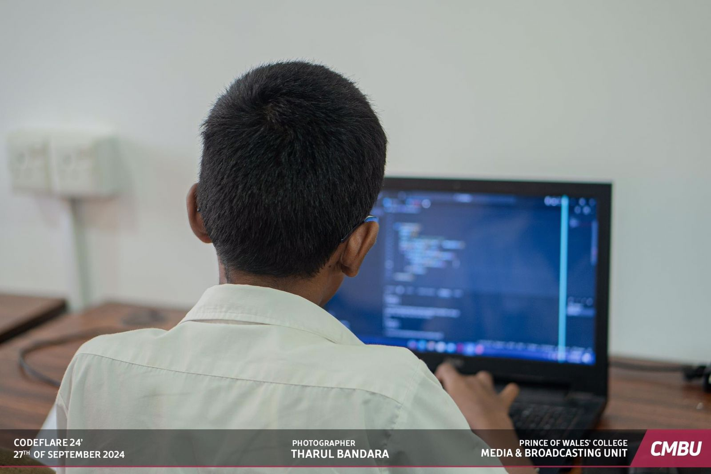
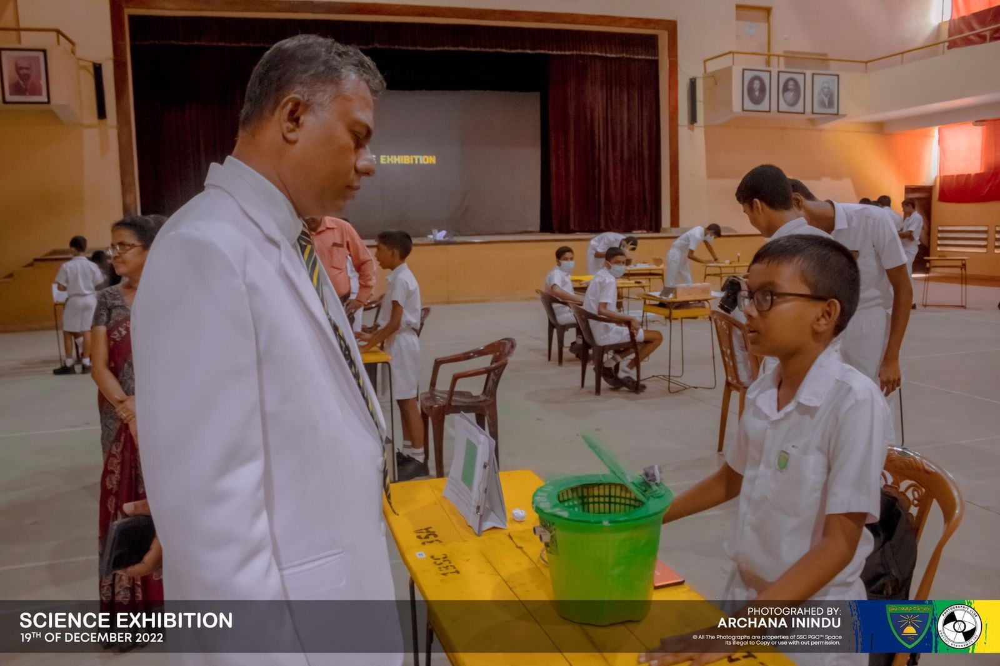
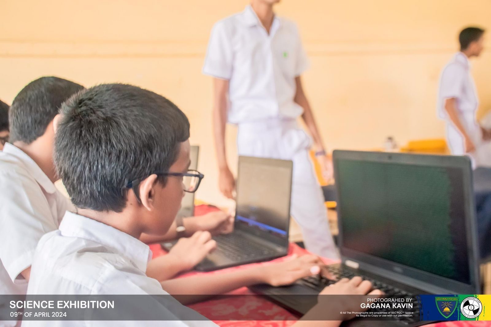
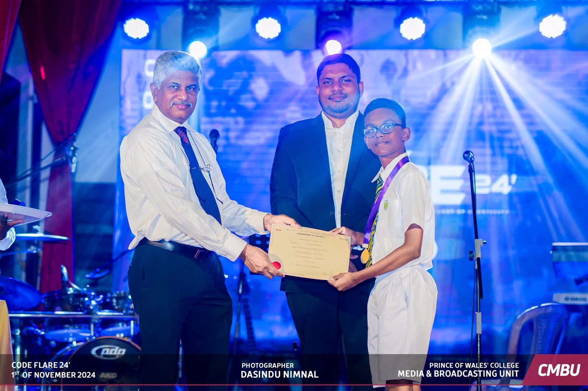
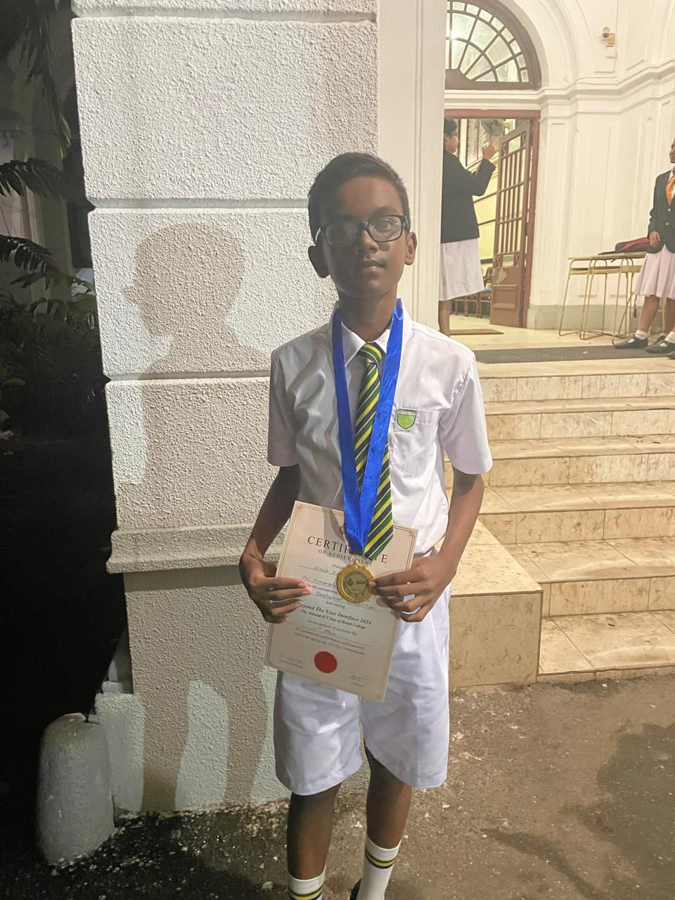

Hiruja Edurapola
Hiruja EdurapolaBlog - Hiruja Edurapola
🧑🏽💻 My Coding Career
I've been coding for about 7 years now. I'm a front-end web and web app developer now. I'm also in the fields of game development, software development, and AI and ML. In this article, I will explain how I became who I am today in the coding field.
Hello World
In 2018 when I was in third grade (8 years old) my uncle brought me an Arduino Uno board along with a few LED bulbs. He taught me some basic stuff on how you can set the value "HIGH" and "LOW" in order to light the LED. I first started Arduino coding using PictoBlox.
After he left, I began experimenting with different numbers of LEDs and different patterns. Although this was my first time coding, I had previously experimented with LEDs, motors, and batteries which were brought by my grandmother (mother's mother).
Then I discovered Scratch. I started off with projects where the sprites danced to music. I made a lot of projects like that. Then I started making games and other projects using Scratch, specifically animated stories. Later in the 2019–2020 period, I fell in love with the pen feature in Scratch. I used to do complex and beautiful animations with pen and publish it on the Scratch website. All the birthday wishes for my family members were now based on a Scratch pen project.
In 2019 I created a YouTube channel called "Video Hiruja" (later changed to Hiruja Studios, before being discontinued due to starting the new channel). I posted fairy tale–inspired stories animated inside Scratch, and voice-overed by me and my sister in the channel. It got about 50 subscribers, mostly family members and relatives.
Discovering Web Development
In 2021, when I was in the 6th Grade (11 years old), my father signed me up for an online web development course. It was during the COVID-19 quarantine period, so I had already started using the computer more often. The first day was really interesting to me. I learned about the basics and how to add text to a webpage.
After the class, I experimented with the things I had already learned. Eventually, I got better and better at web development while doing the course, and at a certain point, I remember, I had trouble sharing my assignment on the screen. When I told the lecturer of the course about it, he said
"No need to share. The chances of Hiruja getting an error is very rare."
This was a really good motivation that I still remember today even after 5 years. After and during the course, I spent most of the time recreating/reverse-engineering popular websites like Apple.
The Next Steps
After the web development course, I was qualified to take the game development course from the same lecturer. I learned C# with Unity 2D game development. I created many games during the course but dropped out without going to the 3D stage of the course.
After that, all of my other knowledge is self-taught. I was only working as a front-end web developer until 2023. I made a lot of websites and web apps during the time. They are also linked at the end of the article.
In 2024, I took Harvard University's CS50 Python course. Now I'm a bit familiar with Python as well. And in 2025 I again started to learn Unity 3D game development with C#. I also learned a few frameworks like React and Tailwind. Although I prefer writing in vanilla HTML, CSS, and JS.
Projects
One of the first major projects that I can remember was made in 2019 when I was in the 4th Grade. I made a Bluetooth-controlled car using Arduino.
In 2022, after the lockdown, I presented my Smart Dustbin Concept at the school's science exhibition. A dustbin controlled with an Arduino controller with an ultrasonic sensor and a servo motor which can detect if there is a human in front of it and automatically open/close the lid.
Later in 2024, I again presented my Parental Control app at the school's science exhibition. A Python app which periodically takes screenshots of the child's computer screen, so parents can see what their children are up to. This is the time I learned and experimented with Python libraries like Flask and this is when I learned how Python can be used for backend web development.
In 2024 I participated in an inter-school programming competition held by Prince of Wales College Moratuwa. I won the first place in the Python programming category. This was my first noticeable win in the programming section (not web development).
Also in late 2024, I participated in a web development competition held by Royal College - Colombo. I also won the first place in the junior category. This is the time I learned about React and complex web animation technologies. As a component for the web design here, I also came up with a concept of a day-night cycle in HTML using Apple's dynamic wallpaper/image files (.heic).
Apart from those, most of my projects are listed in my GitHub profile and some are also in the end of this article.
| Project | Description | Technologies |
|---|---|---|
| SJML | Something I started doing back in 2024. A css toolkit to make it easier to develop websites. Instead of other simillar technologies like tailwind which uses class names to add styles, sjml directly uses html tags to define css rules. For example a <yt> tag should display the youtube logo, and it doesn't require something like class="fab fa-youtube text-red-600 text-2xl"
Sadly, it was later discontinued but you can still find the older (unmaintained) releases. Documentation Source Code |
Mainly Written in: CSS Other Technologies: JavaScript and SVG |
| Sneak (SSCEHC Parental Control) | My project for science exhibition of Sri Sumangala College - Panadura 2024. This is a python app which can take screenshots of the computer screen periodically and saves it securely so the parents can monitor their kid's activity.
Latest Release Source Code |
Written in: Python Other Technologies: HTML, CSS and JavaScript Backend: Flask |